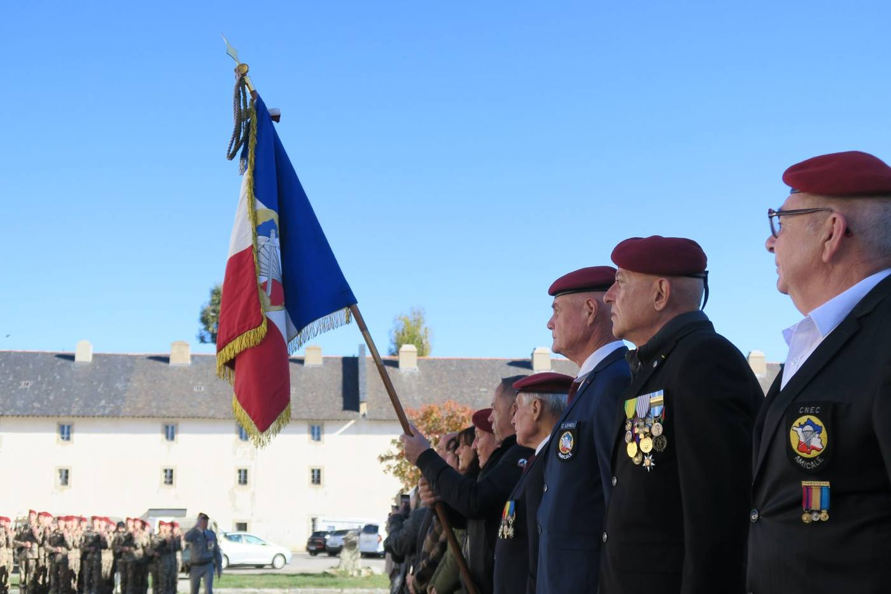
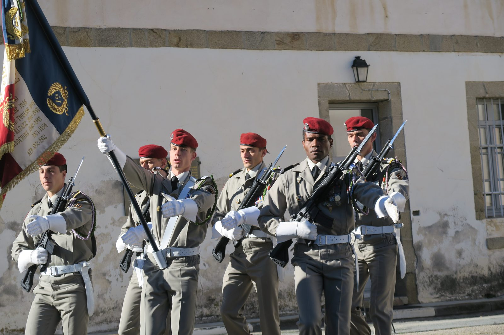
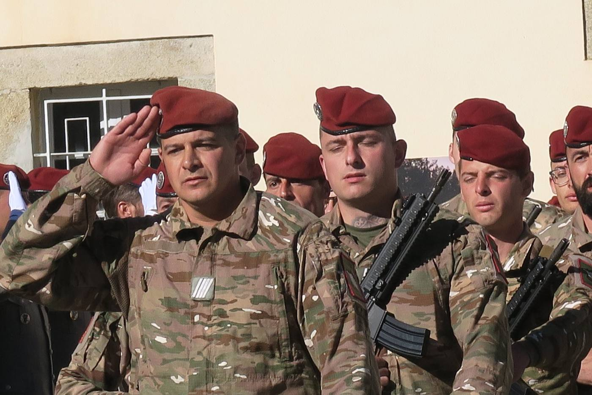

Présentation au drapeau du contingent du Service National Volontaire
La formation du contingent du service national volontaire s'achève au CNEC — Mont-Louis et Collioure.

Une formation qui s'achève
Le vendredi 6 novembre 2026, le contingent du service national volontaire a été présenté au drapeau dans la cour de la citadelle de Mont-Louis, au terme de sa formation au CNEC — 1er Régiment de choc, conduite sur les deux sites du centre, à Mont-Louis et à Collioure.
La cérémonie s'est tenue en présence du chef de corps et du personnel du centre. Garde au drapeau, revue des troupes, honneurs : le contingent a reçu, devant l'emblème du régiment, la reconnaissance de la formation accomplie.
L'amicale présente
Une délégation d'anciens de l'amicale assistait à la cérémonie, au premier rang, décorations au revers. C'est le sens même de notre présence au centre : être là quand une nouvelle génération se voit présenter le drapeau devant lequel nous nous sommes nous-mêmes tenus.
Trente-quatre photographies de cette matinée sont rassemblées dans l'album de la galerie.
En pointe toujours


34 photographies
Toute la matinée, de la mise en place aux échanges qui ont suivi la cérémonie.
Voir l'albumVous y étiez ?
Si vous détenez d'autres photographies de cette cérémonie, confiez-les à la commission mémoire.
Nous écrirePhotographies de Georges Huet, délégué de l'amicale auprès du CNEC. Qu'il en soit remercié.